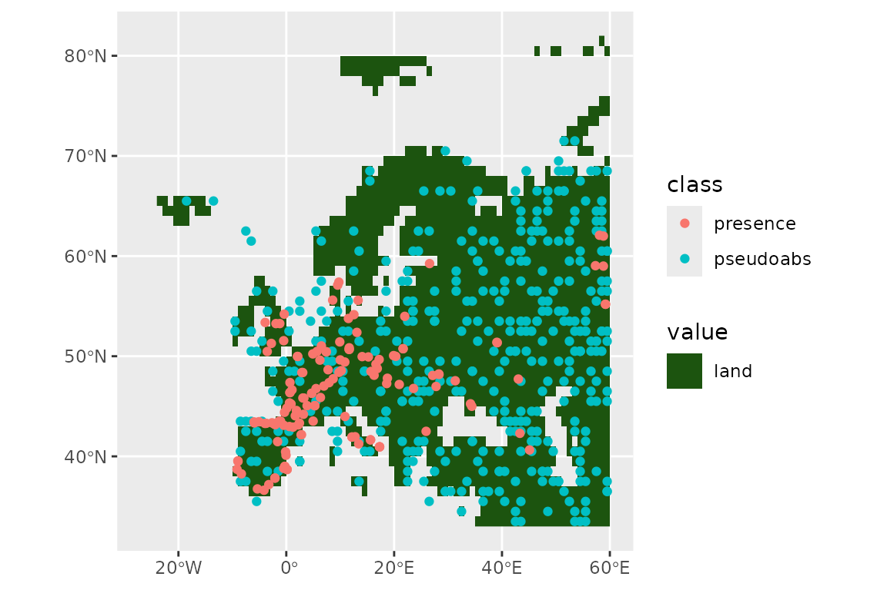
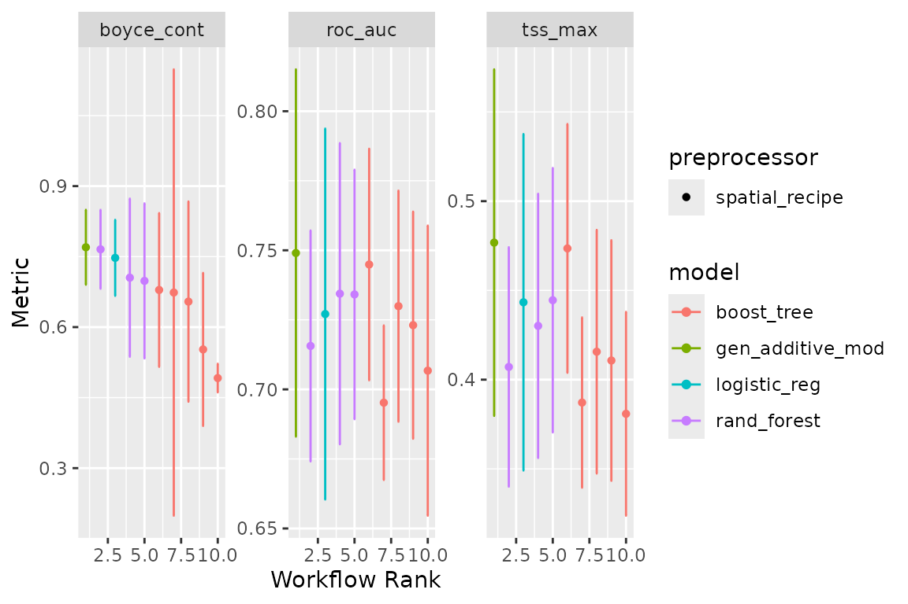

Application with palaeodata
Source:vignettes/a1_palaeodata_application.Rmd
a1_palaeodata_application.RmdSDMs with tidymodels for palaeo data
In this article, we show how a Species Distribution Model can be
fitted with tidysdm on time-scattered
(i.e.palaeontological, archaeozoological, archaeological) data, with
samples covering different time periods. We recommend users first read
the “tidysdm overview” article, which introduces a number of functions
and concepts that will be used in the present article.
We first load tidysdm:
library(tidysdm)
#> Loading required package: tidymodels
#> ── Attaching packages ────────────────────────────────────── tidymodels 1.2.0 ──
#> ✔ broom 1.0.7 ✔ recipes 1.1.0
#> ✔ dials 1.3.0 ✔ rsample 1.2.1
#> ✔ dplyr 1.1.4 ✔ tibble 3.2.1
#> ✔ ggplot2 3.5.1 ✔ tidyr 1.3.1
#> ✔ infer 1.0.7 ✔ tune 1.2.1
#> ✔ modeldata 1.4.0 ✔ workflows 1.1.4
#> ✔ parsnip 1.2.1 ✔ workflowsets 1.1.0
#> ✔ purrr 1.0.2 ✔ yardstick 1.3.1
#> ── Conflicts ───────────────────────────────────────── tidymodels_conflicts() ──
#> ✖ purrr::discard() masks scales::discard()
#> ✖ dplyr::filter() masks stats::filter()
#> ✖ dplyr::lag() masks stats::lag()
#> ✖ recipes::step() masks stats::step()
#> • Use tidymodels_prefer() to resolve common conflicts.
#> Loading required package: spatialsamplePreparing your data
We start by loading a set of radiocarbon dates (calibrated) for horses, covering from 22k years ago until 8k years ago.
data(horses)
horses
#> # A tibble: 788 × 3
#> latitude longitude time_bp
#> <dbl> <dbl> <int>
#> 1 43.2 -2.04 -14000
#> 2 43.2 -2.04 -14000
#> 3 43.2 -2.04 -14000
#> 4 43.2 -2.04 -14000
#> 5 43.2 -2.04 -16000
#> 6 43.3 -1.89 -16000
#> 7 43.2 -2.2 -14000
#> 8 43.2 -2.2 -19000
#> 9 43.2 -2.2 -20000
#> 10 43.2 -2.2 -21000
#> # ℹ 778 more rowsWe convert our dataset into an sf data.frame so that we
can easily plot it (here tidyterra shines):
library(sf)
#> Linking to GEOS 3.10.2, GDAL 3.4.1, PROJ 8.2.1; sf_use_s2() is TRUE
horses <- st_as_sf(horses, coords = c("longitude", "latitude"))
st_crs(horses) <- 4326As a background to our presences, we will use the land mask for the
present, taken from pastclim, and cut to cover only
Europe:
#> Loading required package: terra
#> terra 1.7.83
#>
#> Attaching package: 'terra'
#> The following object is masked from 'package:tidyr':
#>
#> extract
#> The following object is masked from 'package:scales':
#>
#> rescale
library(pastclim)
land_mask <- pastclim::get_land_mask(time_bp = 0, dataset = "Example")
europe_poly <- vect(region_outline$Europe)
crs(europe_poly) <- "lonlat"
land_mask <- crop(land_mask, europe_poly)
land_mask <- mask(land_mask, europe_poly)And use tidyterra to plot:
library(tidyterra)
#>
#> Attaching package: 'tidyterra'
#> The following object is masked from 'package:stats':
#>
#> filter
ggplot() +
geom_spatraster(data = land_mask, aes(fill = land_mask_0)) +
geom_sf(data = horses, aes(col = time_bp))
We now thin our presences, so that locations are further than 100km and 2000 years apart.
set.seed(123)
horses <- thin_by_dist_time(horses,
dist_min = km2m(100),
interval_min = y2d(2000),
time_col = "time_bp",
lubridate_fun = pastclim::ybp2date
)
nrow(horses)
#> [1] 185And see what we have left:
ggplot() +
geom_spatraster(data = land_mask, aes(fill = land_mask_0)) +
geom_sf(data = horses, aes(col = time_bp))
We now need a time series of palaeoclimate reconstructions. In this
vignette, we will use the example dataset from pastclim.
This dataset only has reconstructions every 5k years for the past 20k
years at 1 degree resolution, with 3 bioclimatic variables. It will
suffice for illustrative purposes, but we recommend that you download
higher quality datasets with pastclim for real analysis. As
for the land mask, we will cut the reconstructions to cover Europe
only:
library(pastclim)
climate_vars <- c("bio01", "bio10", "bio12")
climate_full <- pastclim::region_series(
bio_variables = climate_vars,
data = "Example",
crop = region_outline$Europe
)Now we thin the observations to only keep one per cell in the raster (it would be better if we had an equal area projection…), and remove locations outside the desired area (if there was any):
set.seed(123)
horses <- thin_by_cell_time(horses,
raster = climate_full,
time_col = "time_bp",
lubridate_fun = pastclim::ybp2date
)
nrow(horses)
#> [1] 138Let’s see what we have left of our points:
ggplot() +
geom_spatraster(data = land_mask, aes(fill = land_mask_0)) +
geom_sf(data = horses, aes(col = time_bp))Now we sample pseudo-absences (we will constraint them to be at least 70km away from any presences), selecting three times the number of presences
set.seed(123)
horses <- sample_pseudoabs_time(horses,
n_per_presence = 3,
raster = climate_full,
time_col = "time_bp",
lubridate_fun = pastclim::ybp2date,
method = c("dist_min", km2m(70))
)Let’s see our presences and absences:
ggplot() +
geom_spatraster(data = land_mask, aes(fill = land_mask_0)) +
geom_sf(data = horses, aes(col = class))
Now let’s get the climate for these location. pastclim
requires a data frame with two columns with coordinates and a column of
time in years before present (where negative values represent time in
the past). We manipulate the sf object accordingly:
horses_df <- horses %>%
dplyr::bind_cols(sf::st_coordinates(horses)) %>%
mutate(time_bp = date2ybp(time_step)) %>%
as.data.frame() %>%
select(-geometry)
# get climate
horses_df <- location_slice_from_region_series(horses_df,
region_series = climate_full
)
# add the climate reconstructions to the sf object, and remove the time_step
# as we don't need it for modelling
horses <- horses %>%
bind_cols(horses_df[, climate_vars]) %>%
select(-time_step)Fit the model by crossvalidation
Next, we need to set up a recipe to define how to handle
our dataset. We don’t want to transform our data, so we just need to
define the formula (class is the outcome, all other variables
are predictors; note that, for sf objects,
geometry is automatically ignored as a predictor):
horses_rec <- recipe(horses, formula = class ~ .)
horses_rec
#>
#> ── Recipe ──────────────────────────────────────────────────────────────────────
#>
#> ── Inputs
#> Number of variables by role
#> outcome: 1
#> predictor: 3
#> coords: 2We can quickly check that we have the variables that we want with:
horses_rec$var_info
#> # A tibble: 6 × 4
#> variable type role source
#> <chr> <list> <chr> <chr>
#> 1 bio01 <chr [2]> predictor original
#> 2 bio10 <chr [2]> predictor original
#> 3 bio12 <chr [2]> predictor original
#> 4 X <chr [2]> coords original
#> 5 Y <chr [2]> coords original
#> 6 class <chr [3]> outcome originalWe now build a workflow_set of different models,
defining which hyperparameters we want to tune. We will use
glm, gam, random forest and boosted
trees as our models, so only random forest and boosted
trees have tunable hyperparameters. For the most commonly used
models, tidysdm automatically chooses the most important
parameters, but it is possible to fully customise model
specifications.
horses_models <-
# create the workflow_set
workflow_set(
preproc = list(default = horses_rec),
models = list(
# the standard glm specs (no params to tune)
glm = sdm_spec_glm(),
# the standard sdm specs (no params to tune)
gam = sdm_spec_gam(),
# rf specs with tuning
rf = sdm_spec_rf(),
# boosted tree model (gbm) specs with tuning
gbm = sdm_spec_boost_tree()
),
# make all combinations of preproc and models,
cross = TRUE
) %>%
# set formula for gams
update_workflow_model("default_gam",
spec = sdm_spec_gam(),
formula = gam_formula(horses_rec)
) %>%
# tweak controls to store information needed later to create the ensemble
option_add(control = control_ensemble_grid())Note that gams are unusual, as we need to specify a formula
to define to which variables we will fit smooths. By default,
gam_formula() fits a smooth to every continuous predictor,
but a custom formula can be provided instead.
We now want to set up a spatial block cross-validation scheme to tune and assess our models:
library(tidysdm)
set.seed(1005)
horses_cv <- spatial_block_cv(horses, v = 5)
autoplot(horses_cv)
We can now use the block CV folds to tune and assess the models:
set.seed(123)
horses_models <-
horses_models %>%
workflow_map("tune_grid",
resamples = horses_cv, grid = 5,
metrics = sdm_metric_set(), verbose = TRUE
)
#> i No tuning parameters. `fit_resamples()` will be attempted
#> i 1 of 4 resampling: default_glm
#> ✔ 1 of 4 resampling: default_glm (258ms)
#> i No tuning parameters. `fit_resamples()` will be attempted
#> i 2 of 4 resampling: default_gam
#> ✔ 2 of 4 resampling: default_gam (671ms)
#> i 3 of 4 tuning: default_rf
#> i Creating pre-processing data to finalize unknown parameter: mtry
#> ✔ 3 of 4 tuning: default_rf (2.5s)
#> i 4 of 4 tuning: default_gbm
#> i Creating pre-processing data to finalize unknown parameter: mtry
#> ✔ 4 of 4 tuning: default_gbm (15.2s)Note that workflow_set correctly detects that we have no
tuning parameters for glm and gam. We can have a look
at the performance of our models with:
autoplot(horses_models)
Now let’s create an ensemble, selecting the best set of parameters for each model (this is really only relevant for the random forest, as there were not hype-parameters to tune for the glm and gam). We will use the Boyce continuous index as our metric to choose the best random forest and boosted tree. When adding members to an ensemble, they are automatically fitted to the full training dataset, and so ready to make predictions.
horses_ensemble <- simple_ensemble() %>%
add_member(horses_models, metric = "boyce_cont")And visualise it
autoplot(horses_ensemble)
Projecting to other times
We can now make predictions with this ensemble (using the default option of taking the mean of the predictions from each model) for the Last Glacial Maximum (LGM, 21,000 years ago).
climate_lgm <- pastclim::region_slice(
time_bp = -20000,
bio_variables = climate_vars,
data = "Example",
crop = region_outline$Europe
)And predict using the ensemble:
prediction_lgm <- predict_raster(horses_ensemble, climate_lgm)
ggplot() +
geom_spatraster(data = prediction_lgm, aes(fill = mean)) +
scale_fill_terrain_c()